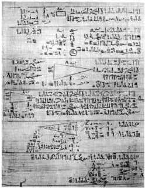
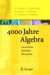

Geschichte der Mathematik: Zeittafeln Algebra, Geometrie, Analysis

Hauptinformation über die ägyptische Mathematik: Rhind Papyrus (nach dem schottischen Ägyptologen Alexander Henry Rhind, der das Papyrus im Jahr 1858 kaufte). Es stammt vom Schreiber Ahmes (1680 - 1620 v.Chr.). Dieser wiederum gab an, dass die Informationen auf dem Papyrus bereits in den Jahren 2000 v.Chr. bekannt waren.

Altchinesische Mathematik um 1303
(das später nach Blaise Pascal benannte Dreieck)
Zeittafel Klassische Algebra |
|
| 2. Jahrtausend vor Christus | Die Ägypter lösen lineare Gleichungen mit einer Unbekannten |
| 2. Jahrtausend vor Christus | Die Babylonier lösen Systeme von zwei linearen Gleichungen mit zwei Unbekannten |
| 2. Jahrtausend vor Christus | Die Babylonier behandeln Gleichungssysteme, die auf quadratische Gleichungen führen |
| 3. Jahrhundert nach Christus | Die Griechen verwenden bei der Lösung von Gleichungssystemen Symbole für die Rechenoperationen |
| 9. Jahrhundert nach Christus | Al-Khwarizmi entwickelt Methoden zur Lösung quadratischer Gleichungen |
| 1545 | Cardano veröffentlicht Lösungsmethoden für die Gleichungen dritten Grades |
| 1591 | Vieta verwendet in der Theorie der Gleichungen Buchstaben statt Zahlen |
| 1614 | John Napier veröffentlicht die ersten Werte für Logarithmen |
| 1620 | Jost Bürgi veröffentlicht "Arithmetische und geometrische Progresstabuln" über natürliche Logarithmen |
| 1637 | Descartes stellt den Zusammenhang zwischen dem Grad einer Gleichung und der Zahl ihrer Lösungen fest |
| 1797 | Gauss
beweist in seiner Dissertation den Fundamentalsatz der Algebra: 'Jede Gleichung n-ten Grades hat genau n komplexe Lösungen' |
| 1824 | Niels Abel beweist, dass es für Gleichungen ab 5. Grad keine allgemeine Lösungsformeln gibt |
| Ab 1824 | Beginn der 'modernen' Algebra mit Evariste Galois |
Zeittafel Geometrie |
|
| 2. Jahrtausend vor Christus | Den Babylonier ist der später nach Pythagoras benannte Satz über die Beziehungen der Seiten in einem rechtwinkligen Dreieck bekannt |
| 2. Jahrtausend vor Christus | Die Ägypter benützen eine Näherungsformel für die Berechnung der Kreisfläche |
| 2. Jahrtausend vor Christus | Die Ägypter berechnen das Volumen eines Pyramidenstumpfs |
| um 440 vor Christus | Hippokrates v. Chios berechnet die Flächen von Möndchen |
| um 220 vor Christus | Apollonios v. Perge definiert die Ellipse als Kegelschnitt |
| 1636 | Verbindung von Algebra mit Geometrie: Pierre de Fermat führt Koordinatensysteme ein |
| 1637 | René Descartes stellt eine Hyperbelgleichung auf |
| 1822 | Erfindung der projektiven Geometrie: Victor Poncelet untersucht projektive Eigenschaften |
| 1900 | David Hilbert führt die strenge Axiomatik in der Geometrie ein |
Zeittafel Analysis |
|
| 3. Jahrhundert vor Christus | Archimedes berechnet eine unendliche Reihe |
| 3. Jahrhundert vor Christus | Archimedes berechnet den Inhalt eines Parabelsegmentes |
| 1615 | Infinitesimale Methoden: Kepler berechnet den Inhalt von Rotationskörpern |
| 1629 | Anfänge der Differentialrechnung: Fermat bestimmt Maxima und Minima |
| 1635 | Cavalieri berechnet den Flächeninhalt der allgemeinen Parabel |
| 1670 | Zusammenhang zwischen Diff.- und Integralrechnung: Barrow entdeckt den
Hauptsatz der
Differential- und Integralrechnung |
| um 1675 | Erfindung des Calculus: Leibniz erfindet die moderne Differentialrechnung |
| um 1675 | Anwendung auf Physik: Newton berechnet Bewegungsvorgänge |
| 1755 | Die ersten Lehrbücher: Euler differenziert die sinus-Funktion |
Literatur: Popp, Walter: Wege des exakten Denkens, Ehrenwirth Verlag München 1981


4000 Jahre Algebra
H-W. Alten, A.D. Naini..
5000 Jahre Geometrie
H-W. Alten, A.D. Naini..
Die Geschichte der Null
R. Kaplan, E. Kaplan
Das unendliche Denken
Robert Kaplan
Geschichte der Mathematik
H. Kaiser, W. Nöbauer
Wege des exakten Denkens
Walter Popp